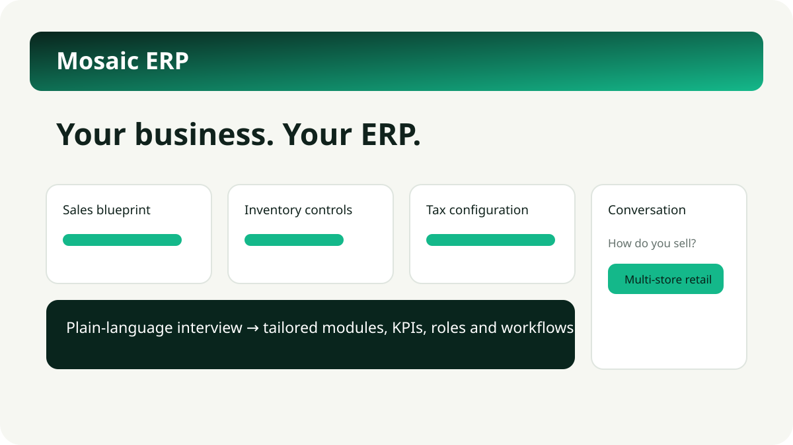

Fit the system to the shop
Grocery, fashion, electronics, pharmacy, beauty, specialty retail, services, multiple stores, online channels, credit, expiry, and warranty needs change the blueprint.
Answer simple questions about how your shop works. Mosaic sets up the tested core you need to buy, receive, sell, take exact payments, handle returns, control stock and cash, pay suppliers, reconcile the bank and close the period.

Mosaic connects everyday retail work to the core accounts while keeping access, changes and exceptions visible.
Grocery, fashion, electronics, pharmacy, beauty, specialty retail, services, multiple stores, online channels, credit, expiry, and warranty needs change the blueprint.
Built-in deterministic chat is the default. You can connect your own AI provider, with setup and configuration guided in chat. Secrets use a masked secure step and never enter chat, logs, exports, or audit detail.
Ask for dashboards and supported reports in plain language. Mosaic creates a reviewable definition from allowlisted business data, never unrestricted SQL.
Give staff only the actions, locations, amounts and record states they need. Sessions and invitations are revocable, and changes are audited.
Carry approved purchases, sales, returns, supplier bills, payments and bank matches into an immutable double-entry record and core reports.
Country-specific questions, source links, dates, and warnings help uncover facts that cannot safely be guessed. Professional review still matters.
Export your workspace, self-host the software and use the included local backup/restore path. Production recovery and availability remain the operator’s job.
Start locally with the separate Docker Desktop guide. Kubernetes is a professional production path and uses external PostgreSQL.
Follow the Docker Desktop guide, start Mosaic, then open it in the browser. Create the owner account in the browser; no workspace or API key is shown to ordinary users.
Work through plain questions about products, stores, sales channels, stock, credit, returns, services, staff, tax registration, and optional AI-provider setup. Configuration stays chat-guided; provider secrets are entered only in a masked secure step.
See Mosaic select real workflows, reports, roles, verification tasks and business terms from each answer.
Review the planned controls with staff. The owner can verify tax and generated reports in one click; professional review is recommended.
Keep configuration versions and audit history, and roll back configuration when a reviewed choice needs to be reversed.
Use the configured system for its tested core retailer work and export the workspace when needed. Stay within the stated release boundaries.
Mosaic runs the tested core retailer flow, with plain screens for the owner and team.
See the core numbers that matter: stock, cash, supplier bills, aging, trial balance, profit and loss, and balance sheet.
Raise and approve purchases, receive stock, sell with exact tenders, process returns, move and count stock, and close cash.
Add a store, staff role or reviewed configuration change with an audit trail. Reconcile bills, payments and the bank, then lock a closed period.
Mosaic asks the business facts each location needs and keeps official source links and dates with the configuration.
Straight answers about what Mosaic can do today and where production help may be needed.
Yes. The local trial needs Python 3.10+ and two commands. Use the Docker Desktop guide for a local trial. Kubernetes production deployment needs professional help.
The blueprint changes for major retail types, stores, online channels, credit, returns, expiry, warranty, services, and staff patterns.
The validated migration flow supports products, customers, vendors, stock and reviewed open documents. Mapping, reconciliation and opening balances still need review before applying.
Yes. Operational access can be limited by action, location, amount and record state, with revocable sessions and an audit trail.
The tested core includes supplier bills and payments, bank matching, immutable double-entry journals, period locks, aging, trial balance, profit and loss, and balance sheet. Chat can create reviewed draft statutory invoice definitions and other reports from allowlisted business data. Statutory output remains review-gated and filing is excluded.
Candidate calculation packs stay disabled until the owner or a named professional verifies the exact jurisdiction, dates, sources, rules and regression cases. Statutory outputs and filing remain disabled separately.
The core local Mosaic app and its built-in deterministic chat run on the same computer without internet after download. This is not an offline AI claim: the optional local assistant Preview also runs on the same computer once its pinned model is downloaded (about 1.2GB, peak memory about 2.1GB). A connected AI provider, hosted setup, or multi-store setup depends on the chosen provider, network, and infrastructure.
In a self-hosted setup, the business controls its environment. Mosaic supports blueprint export, workspace export, backups, and confirmed deletion.
Backup/restore tools and runbooks are included. There is no promised managed support service. The business owns operations and should use professional platform help for production.
Use the simple local trial to evaluate it. A hosted production setup uses external PostgreSQL with Docker or Kubernetes and needs professional platform help.
Professional review is recommended for tax and accounting. Kubernetes production deployment needs professional platform help; owners can run the Docker Desktop trial themselves.
It depends on current systems and data quality. Mosaic stages and validates supported core records, but mapping, reconciliation and reviewed opening balances still need implementation work before a switch.
The source is MIT licensed with no software licence fee. Hosting, implementation, migration, operations, and professional advice can still cost money.
The source-tested v1.3.0 candidate covers guided setup, built-in deterministic chat, optional bring-your-own AI-provider setup, core purchases, receiving, sales, exact payments, returns, stock, cash, supplier bills/payments, bank matching, period close and core accounting reports. New in Preview: the fine-tuned local assistant can understand, draft and explain ERP actions, and every action stays behind the owner's explicit confirmation of the exact rendered payload. Preview quality is bounded and measured on the frozen development contract: all constrained outputs were schema-valid and every tested unsafe request failed closed, while label accuracy was 84 to 86 percent, so drafts must be read before approval. Its other explicit exclusions still apply.
Business owners can stop above. These links and checks help a technical evaluator plan a production environment.
The local trial uses SQLite. Production packages use an external PostgreSQL service through Docker Compose or Kubernetes/Helm. The v1.3.0 source candidate passed fresh application/security, PostgreSQL 17 tenant-isolation, strict Helm, deployment-validation and live container-readiness checks, plus native amd64/arm64 availability benchmarks for the local assistant Preview (two-stage constrained decoding against the frozen intent contract). Fresh tagged images, signatures, software inventory/provenance and vulnerability results remain required before publication.
Deployment guide · Architecture and limits · Product and publication-parent checks · Pages deployment
Real DNS and encrypted connections, managed PostgreSQL availability and recovery, offsite backups and restore drills, load and failover testing, identity-provider setup, monitoring, incident response, and an independent security assessment before real financial-data use.
Start with the two-command local evaluation. Use the source and evidence to plan a properly operated PostgreSQL production rollout.
Review the v1.3.0 product tree Read the source and guides